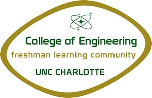

Freshman Learning Community
What is the Learning Community
The College of Engineering Learning Community (FLC) offers students a unique opportunity for successfully completing their degree. With the challenges of the rigorous curriculum, the first year of college can be very demanding. Therefore, FLC participants learn what it takes to achieve excellence with the support of a tight-knit community of persevering students who share common goals and interests.
The Engineering FLC is open to all traditional freshmen who have been accepted to the Lee College of Engineering. It is a residential program. FLC participants live in Hawthorn Hall for two semesters (fall and spring). The FLC offers suite living in Hawthorn Hall. Each 4-person suite has two bedrooms, a bathroom, and living room. The basement has a laundry room, game room/TV area, and a full-size classroom.
The Goals of the Learning Community
Activities and field trips specifically geared to the young men and women of the FLC are available and encouraged. Students in the FLC also take science, math, and liberal studies courses with the general University population allowing them to develop friendships with students from other majors while living in an environment supporting their success in this challenging program. Tutoring for most common courses is available in the FLC several nights each week free of charge!
Who's in Charge
Meg Harkins
Office of Student Development and Success
Associate Professor of Practice, Freshman Advisor, Director for Freshman Learning Community (FLC)
 Smith 271
Smith 271
 704-687-5026
704-687-5026
Yolanda McIlwaine
Senior Student Services Specialist, Freshman Advisor, and Program Coordinator for the Freshman Learning Community (FLC) and Engage ME! Program
 Smith 228E
Smith 228E
 704-687-1995
704-687-1995